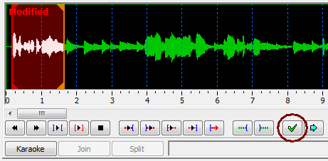

Aegisub / Karaoke Timing Tutorial
This tutorial will teach you how to load a song into Aegisub, how to enter the words for the song and how to add time-codes to the words to synchronise them with the song.
You don't need to have used Aegisub before to follow this tutorial.
Before we begin
There's a few things you need to have ready before starting:
- The song itself. This can for example be as an MP3 file or inside a video. Aegisub can read the sound from video files, you don't need to create a separate sound file if the song is on a video.
- The words for the song. It's easiest if you have them in a plain text file (.txt file) broken into verses and stanzas already.
I am using an English song for demonstration here, but many of the more advanced functions in Aegisub are designed for use with songs in Japanese and other languages that often need transcription or transliteration into Latin script. I will show how to use those in a video tutorial.
Loading the song
We'll start by creating a new file. You already have that if you have just started Aegisub.

Now open your song. Select Open Audio from the Audio menu...

...then select your song file.

Aegisub will now spend a short while reading the audio file.

When it's done, you should have a waveform display (the audio display) at the top of the Aegisub window. If you've used Aegisub before things might look a little different, it might be easier to follow the rest of this tutorial if you set things to look like on this picture.

We'll look at how to use the audio display for timing in a moment, but first let's get the lyrics for the song loaded.
Tips
Loading audio directly from video files: You can select to choose from video files in the Open Audio file selector. This won't actually open the video in the file, it will just read the audio from the video file, the same as if it was just the audio in a separate file.
Instant loading of WAV files: If you have an uncompressed PCM WAV file, Aegisub can open it instantly without first loading it entirely into memory. This can be a great time-saver, but of course it requires a bit of extra disk space and probably also a bit of work beforehand to even create the WAV file. (Remember that this only works with uncompressed PCM files, things like ADPCM or MP3 in WAV files won't work and will still trigger the pre-loading.)
Entering the words
Now, to get the text in, we could just start typing it in...

But don't do that! You'll get much huger success if you have it all in a text file, copy it from there and paste it into Aegisub. (You can often also just copy-paste directly from your favourite lyrics website.)
I have the lyrics in a text file, so I open that, select the text and copy it to the clipboard.

Now things get a little complicated, but don't worry, it really isn't hard :-)
There are two different places you can paste into Aegisub: The subtitles grid and the subtitles edit box. When you paste into the subtitles grid, you create new lines in the subtitle file. When you paste into the subtitles edit box you change the currently selected subtitle line.
We want to make sure we paste into the subtitles grid, so click once inside the grid area (at the bottom of the window) to set the input focus to that.

And now we can paste in the lyrics.

They should appear immediately as lines in the grid. Notice that they all have start and end times set to zero. This makes it easier when we're going to time each line of the lyrics to the song.

It might be a good idea to save your file now, just so you can easily save it later on without having to give it a name.
Remember that Aegisub automatically saves a copy of your file every minute, even if you haven't given it a name yet, so you rarely lose much work if something goes wrong.

Now we're ready to time the individual lines in the lyrics.
Rough timing, the lines first
Before we start with timing, you should know that the way presented here is just one of many. There's several ways you can time to audio in Aegisub and this one might not be the best one for you. Try to also explore the program and see if you can find your own best way to do it. This is just the way I (jfs) usually do it.
First let's look at how to get around the audio display and play the audio. You might already have noticed that there's no less than 6 different "Play" buttons. Usually you'll just use one of them, though: The one with the blue outward-pointing brackets around. That one is Play Selection, and plays the part of the audio that's currently highlighted.

Try pressing the Play Selection button, you should hear the first 5 seconds of the song played. (Aegisub selects the first 5 seconds by default.)
Now try changing the selection: You can left-click and drag in the audio display to select the part you've dragged across. If you click and drag on the left or right edge of the selection you can change just the start or end. Finally, you can make a single left-click (without dragging!) anywhere to set the selection start right to that point, and you can make a single right-click to set the selection end.
Let's time the first line. Find the start and end of the first line of the song you're working on and make sure the audio selection matches it exactly. Notice that at first, the selection was gray but as soon as you started changing it, it became red and the word "Modified" appeared. This means that you have changed the selection but not saved (committed) the new timing.
To commit the timing and store it back to the subtitle line, just press the Commit button, the green check mark.

When you commit, you will also be sent to the next line automatically, so you can immediately continue timing that.
Just continue timing like that until you have covered all the lines of the song: Find start and end of line, set the selection and then commit.
When you're done, save the file.
Tips
Timing from audio isn't hard at all, but here's some tips to make it even easier and also a lot faster!
Hotkeys: There's a number of keyboard shortcuts that can make audio timing much faster to work with.

The most important ones are:
- S - Play Selection: Play back the currently selected audio.
- A and F - Scroll Left and Right: Change the potion of the audio visible.
- G - Commit: Copy the start and end times of the current audio selection into the line selected in the subtitles grid and move to the next line.
Play near start/end: There's four buttons (hotkeys Q, W, E and D) that play half a second just before or just after the start and end of the selection. You can use these to more accurately set the start and end to exactly where the singing starts/ends.
Change selection while playing: While audio is playing you can still change the selection. You won't see any difference if you change the selection start, but if you change the selection end, playback will now end when it hits the new selection end. This way you can quickly stop playback by setting the end close to the playback cursor (the white line that moves while Aegisub is playing) or extend the playback to go even further.
For example, when looking for the start of the first line, you can just start playback with the initial 5 second selection and continue extending it until you find the line. Then, while it's still playing, you can set the right start time and then the end time. When you have the line approximately down like that, you can do an extra check by playing the entire selection again, or by using the Q/W/E/D keys to play the parts right around the start and end times.
Spectrum mode: Usually the audio display is in waveform mode, this is what I've shown on all the screenshots so far. But actually Aegisub has a much cooler way of showing the audio: Spectrum mode.

The spectrum mode takes more CPU and RAM than waveform mode, but it gives a better picture of the audio and with a bit of training you can learn to tell singing from music and even how different sounds look. For example, S sounds are very easy to recognise.
Zooming and scaling: You can use the slider bars to the far right of the audio display to zoom in and out on the audio and to change the volume.
Fine timing, words and then syllables
{{todo| Click Karaoke button.
Time words.
Click Split button. Place split markers. Click Accept Split button.
Time syllables.
Commit.
Repeat.}}